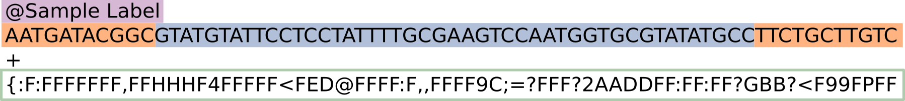

2 Controle de Qualidade e Pré-processamento
2.1 Baixar Amostras
Mude para o diretório Pipeline/data e baixe os dados de exemplo:
cd Pipeline/data
prefetch SRR579292 -X 20G No comando prefetch, o argumento -X especifica o tamanho máximo do arquivo a ser baixado (adapte esse argumento se necessário).
Obtenha as leituras paired-end:
fasterq-dump SRR579292 -e 8 O argumento -e no comando fasterq-dump especifica o número de threads que serão utilizadas. Adapte este argumento conforme o desempenho do seu sistema.
2.2 Controle de Qualidade com FastQC e MultiQC
2.2.1 Estrutura de Arquivos .fastq
O formato .fastq contém as sequências de DNA geradas no sequenciamento, junto com informações sobre a qualidade de cada nucleotídeo. A estrutura de um arquivo .fastq segue um padrão repetitivo a cada fragmento sequenciado:
- Linha 1: Contém o identificador único da leitura, que pode incluir informações sobre o sequenciador e a amostra (começa com o símbolo
@). - Linha 2: A sequência de nucleotídeos resultante do sequenciamento.
- Linha 3: Opcionalmente usada para anotações ou descrições adicionais (começa com um símbolo
+). - Linha 4: A qualidade de cada base na sequência, representada pelo Phred Score, que reflete a confiabilidade da leitura.
A imagem abaixo exemplifica essa estrutura:

- Em Roxo: Identificador do sequenciamento.
- Em Laranja: Sequências adaptadoras (caso ainda não tenham sido removidas), que podem variar dependendo da plataforma de sequenciamento.
- Em Azul: O fragmento de DNA sequenciado, conhecido como “Insert Size”.
- Em Verde: Phred Score, que indica a qualidade de cada base na sequência.
2.2.2 Ferramentas de Controle de Qualidade
Para garantir que as sequências obtidas sejam de boa qualidade e adequadas para análise, utilizamos ferramentas como o FastQC e o MultiQC.
- FastQC: Avalia a qualidade de cada arquivo de sequenciamento individualmente, gerando relatórios com informações sobre a qualidade das bases, conteúdo GC, presença de adaptadores e outros aspectos que podem impactar a análise.
- MultiQC: Agrega os relatórios gerados pelo FastQC (ou outras ferramentas), criando um único relatório consolidado que facilita a visualização e interpretação dos dados de múltiplas amostras.
2.2.3 Gerando Relatórios de Qualidade
Para gerar relatórios de controle de qualidade com o FastQC para cada uma das amostras baixadas, use o seguinte comando:
# Gerando relatórios de qualidade para cada amostra
for sample in $(ls Pipeline/data/*.fastq.gz);
do
fastqc $sample -o Pipeline/data
doneGere o relatório consolidado contendo todas as amostras a partir do output do FastQC:
# Consolidando relatórios com MultiQC
multiqc Pipeline/dataVerifique os gráficos de qualidade, presença de contaminantes e distribuições de qualidade das bases. Ajustes podem ser necessários para garantir a integridade dos dados para as etapas seguintes.
2.3 Pré-processamento das leituras
2.3.1 Contexto
Como vimos na seção anterior, nosso arquivo pode ter sequências de baixa qualidade, sejam estas sequências adaptadoras ou simplesmente erros no procedimento do sequenciamento. Portanto, devemos remover essas sequências de nossas análises posteriores, a fim de não permitir que interfiram com ruído na informação biológica real.
Para isso, obteremos uma amostra de sequenciamento (que será utilizada em todas as seções posteriores) e a processaremos com ferramentas de controle de qualidade, além de alinhar a amostra, de origem na microbiota humana, contra o genoma referência do hospedeiro, garantido que tenhamos apenas sequências advindas da microbiota.
2.3.2 Removendo sequências de baixa qualidade
Remova sequências de baixa qualidade e adaptadores:
fastp -i SRR579292_1.fastq -I SRR579292_2.fastq -o trimmed/SRR579292_1_trim.fastq -O trimmed/SRR579292_2_trim.fastq -q 20 -w 8 --detect_adapter_for_pe -h trimmed/report.html -j trimmed/fastp.json No comando fastp, o argumento -q define o limiar da pontuação de qualidade Phred, e -w especifica o número de threads a serem usadas (adapte esses argumentos se necessário).
Um genoma de referência de Homo sapiens é necessário para remover as sequências do hospedeiro desses dados. Mude o diretório atual para "Pipeline/data/removal/reference" e baixe um genoma de referência do Ensembl.
2.3.3 Remoção de Sequências do Hospedeiro
Baixe o genoma de referência de Homo sapiens do Ensembl:
wget ftp://ftp.ensembl.org/pub/release-102/fasta/homo_sapiens/dna/Homo_sapiens.GRCh38.dna.primary_assembly.fa.gz
pigz -d Homo_sapiens.GRCh38.dna.primary_assembly.fa.gz -p 8 O software pigz é uma implementação paralela do gzip. O argumento -p especifica o número de threads a serem usadas.
Construa um índice Bowtie2:
bowtie2-build Homo_sapiens.GRCh38.dna.primary_assembly.fa ../index/host --threads 8 Volte para "Pipeline/data" e alinhe as sequências contra a referência:
bowtie2 -x removal/index/host -1 trimmed/SRR579292_1_trim.fastq -2 trimmed/SRR579292_2_trim.fastq -S removal/all.sam -p 8 Extraia as leituras não alinhadas:
samtools view -bS removal/all.sam > removal/all.bam
samtools view -b -f 12 -F 256 removal/all.bam > removal/unaligned.bam
samtools sort -n removal/unaligned.bam -o removal/unaligned_sorted.bam
samtools bam2fq removal/unaligned_sorted.bam > removal/unaligned.fastq
cat removal/unaligned.fastq | grep '^@.*/1$' -A 3 --no-group-separator > removal/unaligned_1.fastq
cat removal/unaligned.fastq | grep '^@.*/2$' -A 3 --no-group-separator > removal/unaligned_2.fastq No comando SAMtools, os argumentos -f e -F utilizam flags para especificar, respectivamente, quais alinhamentos devem ser extraídos e quais não devem ser extraídos. Consulte esta documentação para saber mais sobre as flags disponíveis no SAMtools.
Una as leituras paired-end:
fastp -i removal/unaligned_1.fastq -I removal/unaligned_2.fastq -o trimmed/unmerged_1.fastq -O trimmed/unmerged_2.fastq -q 20 -w 8 --detect_adapter_for_pe -h trimmed/report2.html -j trimmed/fastp2.json -m --merged_out merged/SRR579292_merged.fastq Remova sequências duplicadas:
fastx_collapser -i merged/SRR579292_merged.fastq -o collapsed/SRR579292.fasta